THANH NỐI DẪN ĐỘNG LÁI > THÁO RỜI |
| 1. CỐ ĐỊNH CỤM THANH NỐI DẪN ĐỘNG LÁI |
| 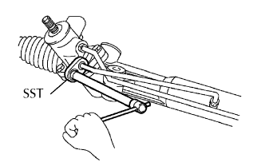 |
Dùng SST, tháo 2 ống cao áp.
| 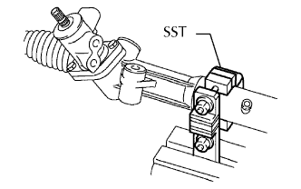 |
Dùng SST, có định thanh nối dẫn động lái giữ các tấm nhôm trên êtô, như được chỉ ra trên hình vẽ.
| 2. THÁO ĐẦU THANH NỐI BÊN TRÁI |
| 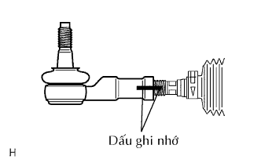 |
Đánh các dấu ghi nhớ lên đầu thanh răng, hãm đai ốc và đầu thanh răng.
Nới lỏng đai ốc hãm và tháo đầu thanh nối và đai ốc hãm.
| 3. THÁO ĐẦU THANH NỐI BÊN PHẢI |
| 4. THÁO KẸP CAO SU CHẮN BỤI THANH RĂNG TRÁI |
| 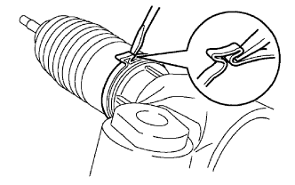 |
Dùng một kìm và một tô vít, nới lỏng kẹp.
| 5. THÁO KẸP CAO SU CHẮN BỤI THANH RĂNG PHẢI |
| 6. THÁO KẸP CAO SU CHẮN BỤI THANH RĂNG TRÁI |
Dùng kìm, tháo kẹp.
| 7. THÁO KẸP CAO SU CHẮN BỤI THANH RĂNG PHẢI |
| 8. THÁO CAO SU CHẮN BỤI THANH RĂNG TRÁI |
| 9. THÁO CAO SU CHẮN BỤI THANH RĂNG PHẢI |
| 10. THÁO ĐẦU THANH RĂNG |
| 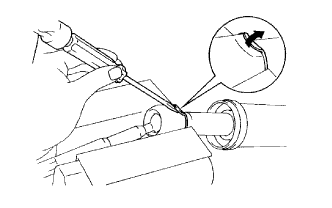 |
Dùng tô vít và búa, mở khoá hãm vòng đệm.
| 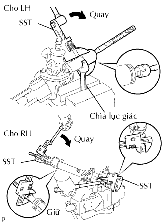 |
Dùng cờ lê, giữ thanh răng (phía bên trái).
Dùng SST, tháo đầu thanh răng (phía bên trái) ra khỏi thanh răng.
Dùng SST, tháo đầu thanh răng (phía bên phải) ra khỏi thanh răng.
Tháo 2 vòng đệm có vấu.
| 11. THÁO DẪN HƯỚNG THANH RĂNG |
| 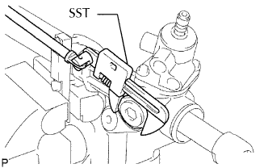 |
Dùng SST, tháo đai ốc hãm.
| 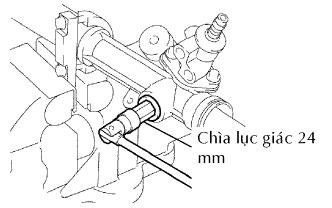 |
Dùng đầu lục giác 24 mm, tháo nắp lò xo dẫn hướng thanh răng.
Tháo lò xo và dẫn hướng thanh răng.
| 12. THÁO VAN ĐIỀU KHIỂN TRỢ LỰC LÁI |
| 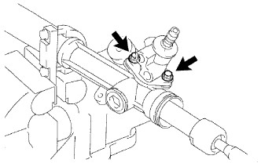 |
Tháo 2 bu lông.
Kéo van điều khiển ra khỏi vỏ thanh răng.
| 13. THÁO CÁI HÃM ĐẦU XI LANH |
| 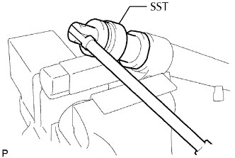 |
Dùng SST, tháo cái hãm.
| 14. THÁO THANH RĂNG VÀ PHỚT DẦU |
| 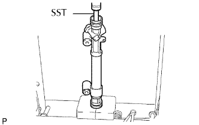 |
Dùng SST va ép thanh răng và phớt dầu ra.
Tháo phớt dầu ra khỏi thanh răng.
| 15. KIỂM TRA THANH RĂNG TRỢ LỰC LÁI |
| 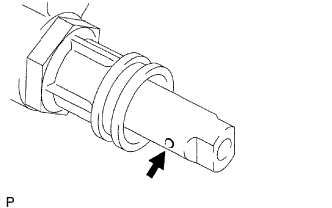 |
Lồng một sợi dây 20 mm (0.79 in.) vào lỗ thông hơi của thanh răng và chắc chắn rằng lỗ thông hơi không bị tắc bởi mỡ.
| 16. KIỂM TRA ĐẦU THANH NỐI BÊN TRÁI |
| 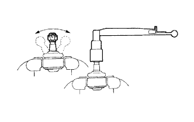 |
Lắc vít cấy khớp cầu trước và sau 5 lần như chỉ ra trên hình vẽ trước khi lắp đai ốc.
Dùng một cân lực, vặn đai ốc liên tục với tốc độ 2 đến 4 giây/vòng và đọc giá trị ở vòng thứ 5.
| 17. KIỂM TRA ĐẦU THANH NỐI BÊN PHẢI |
| 18. THÁO PHỚT DẦU ỐNG THANH RĂNG |
Dùng một tô vít, tháo phớt dầu teflon và gioăng chữ O ra khỏi thanh răng.